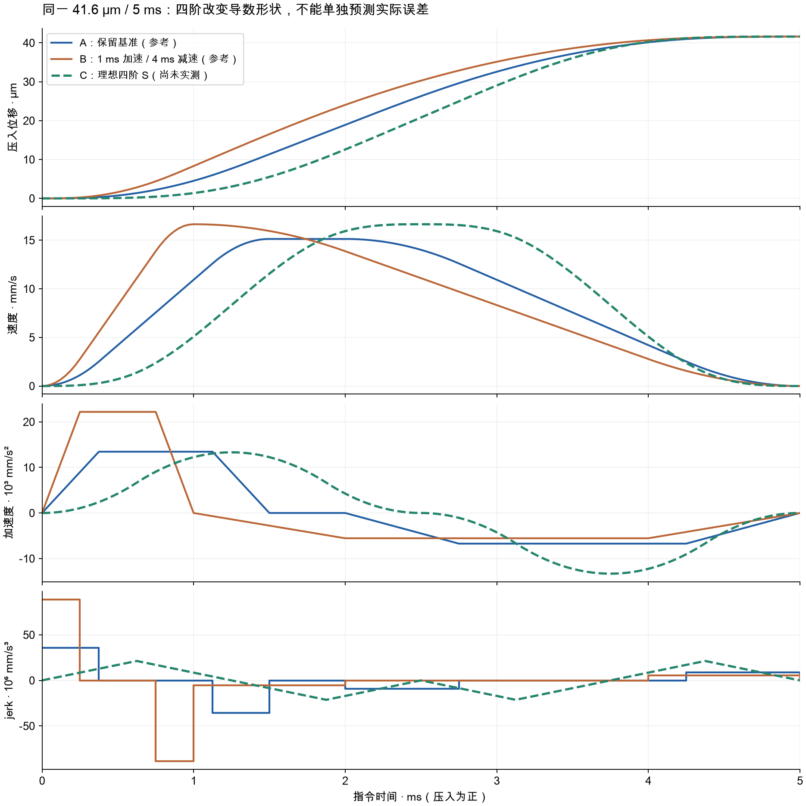
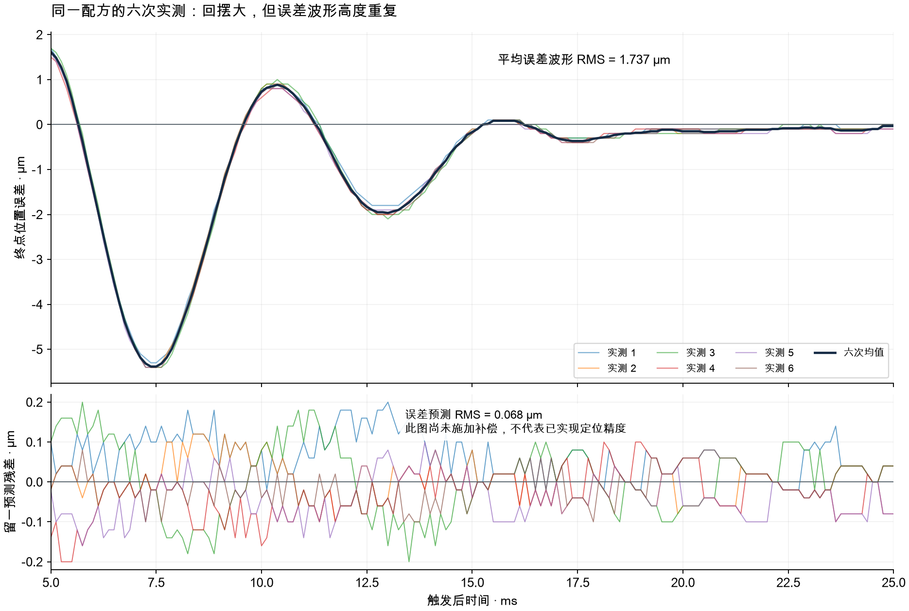

四阶 S 曲线能否减少 5 ms 位置误差？
有机会，但优先优化的应是实际轴的可重复动态误差，而不只是指令曲线的阶数。推荐保留位置闭环，以现有轨迹为基准，先校准前馈的幅值与时机，再研究学习前馈；原生四阶 S 作为同时间、同行程的独立对照。
研究约束为压入 41.6 µm、总运动时间 5 ms、8 kHz 的 40 个控制周期，沿用 5→20 N 实验背景。本报告聚焦位置跟踪、终点剩余速度与回摆。复用两组试验的 10 条完整记录，共 160,000 行；其中 6 条使用相同配方。新增硬件试验为 0，尚无四阶实测或学习补偿后的精度结果。
核心判断：现有误差不是完全随机的。六次相同配方的平均终点误差波形 RMS 为 1.737 µm；用另外五次预测剩下一次的误差曲线，残差 RMS 为 0.068 µm。这说明误差很值得学习，不等于已经能把物理定位误差降到 0.068 µm。
1. 四阶 S 平滑了什么，为什么不保证更快到位
位置依次求导得到速度、加速度、jerk（加速度的变化率）和 snap（jerk 的变化率）。常见三阶 S 使用分段常值 jerk；四阶 S 限制 snap，让 jerk 连续变化。因此四阶可以减轻导数突变带来的高频激励，但它的 snap 仍可发生阶跃。“四阶 S”“四次多项式”和“最小 snap 优化”不能混为一谈。[1，§2]
关键区别是：轨迹发生器给出了理想位置、速度和加速度，实际电机仍需要电流去克服惯性、接触负载和系统动态。把参考曲线画得更平滑，并不会自动使实际轴准确跟随。固定行程 D、时长 T 时，各阶导数按 D/Tⁿ 缩放；换形状会同时改变峰值、作用时机和频谱，不能只看阶数。
文献也没有“一定越高阶越好”的统一结论。Wu 与 Zhang 的四阶研究主要验证轨迹运动学；Berkeley 晶圆扫描台论文则把运动和整定分开：其三阶为 54.0+23.6=77.6 ms，四阶为 60.0+22.8=82.8 ms。四阶整定略短，总过程反而更长。这不是相同 5 ms 的对照，却说明必须把总时间与实际误差一起评价。[1，§3] [2，§2.5.1、表 2.4–2.5]
2. 同样 5 ms，可以构造怎样的四阶候选
离线构造采用短行程四阶 S 的退化形式：8 段非零 snap，每段 0.625 ms（5 拍），符号依次为 +、−、−、+、−、+、+、−。经精确积分，理想参考在 5 ms 到达 41.6 µm，并满足终点 v=a=j=0。这里是参考运动学计算，不是电机响应仿真，也没有使用旧的机械模型冒充当前实机模型。
| 参考轨迹 | 峰值速度 mm/s | 峰值加速度 mm/s² | 峰值 jerk mm/s³ | 实际验证 |
|---|---|---|---|---|
| A：保留基准 | 15.127 | 13,446 | 35,857,239 | 已有重复实测 |
| B：1 ms 加速 / 4 ms 减速 | 16.640 | 22,187 | 88,746,667 | 已有 A–B–A 对照 |
| C：理想四阶 S | 16.640 | 13,312 | 21,299,200 | 只有离线计算 |
C 的峰值 snap 为 3.407872×10¹⁰ mm/s⁴。这个具体例子的 V/A/J 未超过现有 20 mm/s、30,000 mm/s²、10⁸ mm/s³ 的轨迹预算，因而四阶并非在运动学上就做不到 5 ms。不过峰值 jerk 更低，不代表当前接触系统的动态误差必然更低。

3. 源码确认：NYCE 有真四阶，但当前页面仍是三次插补
当前程序调用 SacWriteCubicIntBuffer，每段发送位置、速度与时长，由控制器做三次 Hermite 插补。40 段升压之后还有保持和返回，共 82 段。官方手册保证三次段的 P/V 连续，额外的加速度连续性要由节点设计保证。当前 A 的加速度衔接在数值误差内连续，jerk 仍分段跳变。[5，Spline 与当前源码]
把四阶公式采样成 40 个位置和 41 个速度，不会使接口变成四阶插补。对本例精确计算，三次重构相对理想四阶的最大位置偏差只有 0.0000217 µm（约 0.0217 nm），但加速度衔接跳变可达 88.75 mm/s²，jerk 仍是台阶。位置几何误差极小，因此不能将几微米的实测回摆直接归因于“40 点位置插值不够精细”；导数变化引发多少动态误差，要另行辨识。
这份离线采样配方还被现有编译器拒绝：首段三次曲线有约 0.0000128 µm 的反向微凸，违反参考压入方向条件。未修改该条件，也未把候选保存成可执行版本。继续走当前接口，需要重新设计端段并承认它是四阶参考的三次近似。
| 原生 PTP 配置 | 官方行为 | 5 ms 下的注意点 |
|---|---|---|
| jerk 有限、MAX_PTP_SNAP 有限 | 时间最优四阶 PTP，忽略 jerk ramp time | 按 V/A/J/snap 联合求总时长 |
| snap 无限、jerk ramp time > 0 | 平滑三阶输出，形成四阶轨迹 | 总时间增加所设 ramp time；5+0.5 会变为 5.5 ms |
| snap 无限、jerk ramp time=0 | 普通三阶 PTP | 不能据此声称 jerk 连续 |
因此真四阶可以研究，优先采用 NYCE 原生能力。当前采集器按 spline 状态触发、按固定拍数定义各阶段，原生 PTP 要增加相应的触发、实际时长验证、保持、返回及恢复路径。并非仅切换页面上的曲线名称。另一个参数 PTP_POSITION_DELAY 调整的是 PTP 参考位置相对其导数的时序，不是传感器延迟，也没有证据表明它作用于当前 spline。[5，Point-to-point]
4. 实测告诉我们：应先减少重复回摆
最近的前快后慢试验中，B 的 5 ms 位置更接近终点，但当时已经向外回撤。它减少了正向过冲，却没有减少后面的主要回摆。仅把“第 40 拍位置误差”作为目标，会把一个正在穿过目标的位置误当成已经停稳。
| 实际记录 | 5 ms 终点误差 µm | 正向过冲 µm | 终点向起点回摆 µm | 5–25 ms RMS µm | 约 5 ms 拟合速度 mm/s |
|---|---|---|---|---|---|
| A1 | +1.7 | 1.7 | 5.3 | 1.694 | −0.387 |
| B | +0.9 | 1.5 | 5.4 | 1.713 | −2.347 |
| A2 | +1.6 | 1.6 | 5.4 | 1.732 | −0.293 |
压入为正；回摆指从命令终点向起点方向的最大偏离，不是峰峰值。速度为 4.5–5.5 ms 九点位置拟合，不能解释成精确瞬时速度。来源：此前非对称试验 trial-02/03/04 的原始 CSV。
将最新两条 A 与前一组中完全相同配方的四条 M 合并，六次在 5–25 ms 的误差曲线几乎重合：相对于均值的离散 RMS 仅 0.057 µm，最差同一时刻极差 0.3 µm。误差曲线本身远大于各次之间的差异，这是推荐学习前馈的直接数据依据。

对十条记录的 5–20 ms 尾段作衰减振荡描述，得到的频率点估计集中在 179.56–182.41 Hz。它说明存在相似的闭环尾响应，不足以独立辨识机械共振。20–30 ms 时间留出上的模型 RMS 为 0.2055 µm，直接预测零终点误差的基线为 0.2184 µm，改善有限；其中一条更差。现有 PI、LLF 和负载前馈仍在工作，因此不能直接拿“180 Hz”设置 notch 或构造精确逆模型。
5. 更有效的方向：保留闭环，学习如何提前给对力
高性能运动控制通常把反馈用于抑制未知扰动，把前馈用于提前补偿已知参考运动及可重复动态。Oomen 的综述及实机案例特别强调：重复误差均值可以显示学习潜力，但学习必须考虑系统响应、噪声和鲁棒性；未经约束的逐次累加也会先变好、随后变坏。轨迹更换后，旧的学习结果还可能失效。[3，§II–IV、§V-A]
当前系统已经有原生加速度前馈 KFA，以及负载、参考速度、摩擦和附加 FF。优化目标不是再盲加一次电流，而是确定各部分在正确的时刻是否产生了合适的实际响应。例如，第 20 拍落后可能由第 15～19 拍的作用共同造成；第 20 拍直接增加相同数值的位置，不一定及时补上，还可能在第 25 拍形成新的过冲。
建议先固定 A 的位置/速度参考和接触起点，用少量平滑基函数描述附加 FF，而不是独立拟合 40 个无约束参数。通过有界的小变化测出“某段 FF 改变，对随后各拍位置产生多大影响”，形成闭环敏感度矩阵 G。这样才能把整段误差转换成提前量、幅值和制动分配。现有记录足以显示重复性，尚不足以唯一辨识这个矩阵。
e = r − x； Δθ = argmin { ‖W(e − GΔθ)‖² + λ‖Δθ‖² + μ‖DΔθ‖² }
θ 表示少量平滑 FF 参数；W 强调终点与后续回摆；D 惩罚过于尖锐的参数变化。这个式子说明优化方向，不是一组已经辨识完成、可直接下发的增益。图 2 的误差符号为 x−r，此处为便于优化推导使用 r−x。
优化应同时看：运动过程原生 following error、5 ms 的实际终点位置、终点剩余速度，以及 5–25 ms 终点误差 RMS 和最大回摆。原生 FE 与同一记录行的 x−SP 分开统计，不能混用采样相位。补偿作用安排在 0–5 ms 内，并把电流、逐拍 FF 变化和运动预算纳入约束；不能靠 5 ms 之后再补救来证明已经在 5 ms 到位。
当前残余 FF 表在 0 和 5 ms 都为零，实际非零作用点可在 0.125–4.875 ms；每拍值零阶保持。最终整张残余表须满足绝对值不超过 50 mA、相邻变化不超过 20 mA，还要通过包含基线、其他 FF 与反馈余量的完整电流预算。已有 20 mA 包络也计入总值。学习在试验之间进行：计算、冻结下一版，再执行；当前程序没有同一次运动内的在线自适应。
6. 哪些参数值得动，哪些暂时没有依据
| 参数或结构 | 当前实现 / 官方能力 | 优化判断 |
|---|---|---|
| P40 / V41 | 决定实际三次参考；两者共同决定段内 A/J | 先固定基准辨识，再少量联合优化；不是单改某拍 P |
| 原生 KFA | 当前运动中已启用，是独立的加速度前馈支路 | 优先核对比例、符号和相位；附加 FF 不再重复叠加 KFA×a |
| 负载 / 速度 / 摩擦 FF | 已在现有公式中生效 | 区分静态保持与动态补偿，避免用静态增益硬压回摆 |
| 40 拍附加 FF | 离散零阶保持；保持和返回阶段归零 | 最适合承载有界的学习修正，但要检查端点与逐拍变化 |
| KV / LLF | KV 是位置误差微分；当前 KV=0、LLF 开启 | 有动态辨识后再配合调阻尼；KV=0 不等于完全没有阻尼 |
| notch / LPF | 当前记录中关闭；不属于任意逐拍可调的当前实现 | 先确认频响与相位；尾段约 180 Hz 不能直接作为 notch 依据 |
| KFJ / KFSNAP | 官方支持 jerk/snap 前馈；当前运行合同强制为 0 | 有正确导数、单位和模型后才扩展；现电流预算未包含这两项 |
| 原生四阶 PTP | 正式支持，与当前 spline 执行路径不同 | 作为单独候选对照，保持相同总时长和评价口径 |
官方控制图还纠正了一个容易误判的地方：FF 的两个加入点均在 LLF 之后，分别位于 notch 前后。不能把当前附加 FF 的相位问题直接说成“被 LLF 滤慢了”；当前 notch 都关闭，单独切换 FF 加入点也没有已知收益。NY4120 上 LLF 与 KV 可独立设置，不能套用其他 DriveLink 轴的限制。[5，Control filter parameters 与标准控制参数]
输入整形也有价值，但必须算入时间。经典 ZV 整形间隔约为半个阻尼周期，ZVD 总长约一个周期；若只把 180 Hz 当作示意，分别约 2.78 和 5.56 ms。把它们附加在已有 5 ms 运动后会超时，要使用就必须在整个 5 ms 内重新设计，并先有可信动态模型。[4，式 4–7]
7. 推荐的下一轮优化顺序
- 先固定 A，校准已有前馈。保持同一起点、行程和 5 ms 时长，核对实际 P/V、原生 FE、参考导数、FF 和电流时序。先明确当前 KFA 与动态响应的匹配程度。
- 再用少量参数学习整段误差。通过有限的小扰动获得闭环 FF→位置敏感度，从 4～6 个平滑参数起步。让前半段与制动段共同减少 x5、v5 和 5–25 ms 回摆。候选先离线重构和检查，再冻结参数做独立复测。
- 真四阶单独做同条件对照。先验证原生 PTP 的实际时长和记录时钟，再比较同样 41.6 µm / 5 ms 下的完整误差。若更换参考，重新验证或学习 FF，避免把参考变化与学习效果混在一起。
- 根据辨识结果处理反馈动态。若先发现阻尼或稳定性问题，应先处理 KV/LLF 等反馈设置，再继续学习；不能硬排在所有前馈优化之后。高阶前馈放在导数与预算扩展完成之后，不把所有增益一次打开。
最值得争取的变化是：实际轴在 5 ms 附近既接近终点，速度也已接近零，随后回摆明显缩小。四阶 S 是实现这个目标的候选工具；基于重复误差设计前馈，是当前证据更直接支持的优化路线。
来源与复算说明
[5] Bosch Rexroth NYCE4000，V54 / 2024 官方资料与本地 54.2.0.1 SDK：Software User Manual 的 Point-to-point（文档片段 d22e15595）与 Spline（d22e16791）；Tools User Manual 的 Point To Point motion generator（d22e9117）、Control filter parameters（d22e6609）、标准控制参数（d22e5332）；Embedded Application User Manual 的 Fast data access（d22e3877）；SDK 的 sacapi.h、sactypes.h、sacparameters.h。引用的是本地官方手册正文与原图，未公开转载整套文档。
当前工程核对 position40_owner.c、position40_collector.c、position40_model.c、position40.h、position_profiles.py，SHA256 均与最后 A2 的 05dd0a539581c33b 部署清单一致。旧 zr1 PoC 的设备、方向和运行合同不同；知识库中的 Ghidra 恢复代码也不是当前固件的厂商发布源，未据此推断可直接下发能力。
- Wu, G.; Zhang, N. (2023). Kinematically Constrained Jerk–Continuous S-Curve Trajectory Planning in Joint Space for Industrial Robots. Electronics 12(5), 1135. 出版社 / DOI。用于四阶构造与运动学边界；并非本机实测。
- Stearns, H. M. (2011). Iterative Methods for High Precision Motion Control with Application to a Wafer Scanner System. UC Berkeley 博士论文。机构全文。采用表 2.4/2.5 的运动与整定数值；表后一句相反描述不作为依据。
- Oomen, T. (2020). Learning for Advanced Motion Control. IEEE AMC, 65–72. 作者全文 · DOI。用于模型前馈、重复学习及鲁棒性边界。
- Blackburn, D. F. (2006). Command Shaping for Vibration Reduction in Nonlinear Cabled Systems. Georgia Institute of Technology 硕士论文。机构记录。用于 ZV/ZVD 的时间代价，不将缆索系统结果当作当前压入效果。
复算方法：四阶参考使用精确积分与独立解析实现交叉核对；六次重复性按同一完整配方 ID、触发后 tick 40…200（161 点）计算，留一时排除被预测记录；十条尾段训练为 [5,20] ms，时间留出为 (20,30] ms，独立重拟合结果一致。它们均为回溯分析，不能替代未见过的新动作验证。接触重建、时间漂移与扰动下的可迁移性尚未由这些六次记录证明。